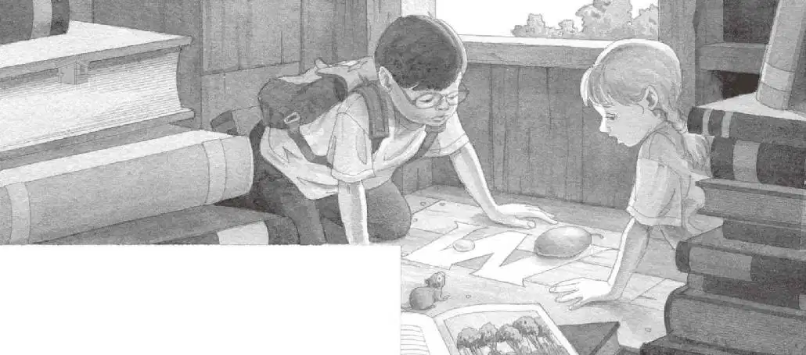
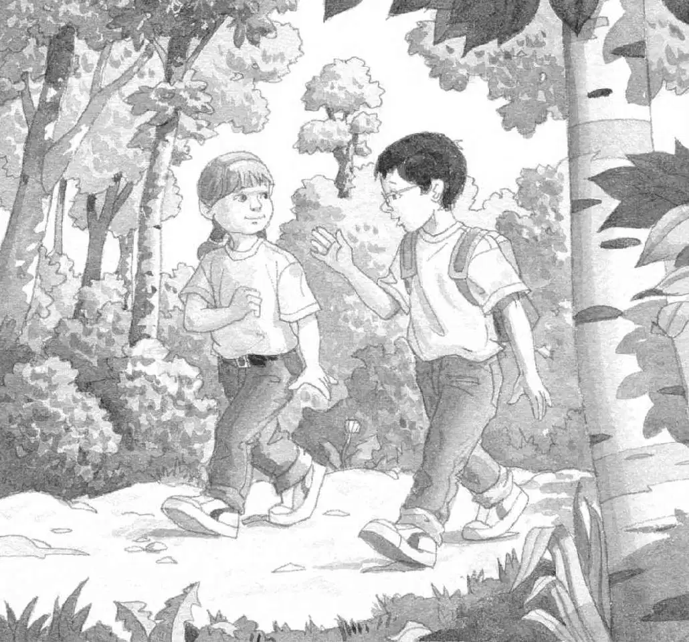

“吱吱。”
杰克睁开眼睛。小老鼠在树屋的窗台上。
“我们到家了。”安妮说。
杰克放心地长舒了一口气。
安妮对着下午的阳光，举起了那颗红果子。
“这到底是什么呢？”她问道。
“也许书里写着呢。”杰克回答。
他掏出那本热带雨林书，翻了翻，找到了一幅红果子的图片。“在这儿呢！”他说。他大声念道：
杧果味道很甜，像桃子一样。
“杧果？嗯……”安妮把红果子贴近自己的嘴唇。
“喂！”杰克从她手里一把夺过杧果说，“我们得把它跟月光石放在一起。”
杰克把杧果放在地板上的字母M上。它的旁边就是那块晶莹剔透的月光石。
“月光石……杧果。”安妮轻声念着，听上去像在念咒语。
“已经完成了一半任务，”杰克说，“还要拿到两样东西。”
“然后我们就能把你解救出来了，仙女摩根！”安妮大声说道。好像仙女摩根就在附近似的。
“你怎么知道她能听见你说话？”杰克问。
“我能感觉到。”安妮说。
“噢，真是服了你。”杰克说。他要得到更多证据才会相信。
“吱吱。”小老鼠正看着杰克和安妮。
“我们现在要把你留在这儿了。”杰克对小老鼠说。
“吱吱。”
“我们能带它一起走吗？”安妮问道。
“不行，”杰克说，“妈妈不会让我们在家里养小老鼠的。她不喜欢小老鼠，记得吗？”
“怎么会有人不喜欢小老鼠呢？”安妮说。
杰克笑了起来。“怎么会有人不喜欢蜘蛛呢？”他说。
“那不一样。”安妮拍了拍小老鼠的脑袋说，“再见了，你在这儿等着我们，我们明天就回来。”
杰克也拍了拍小老鼠。“再见了，花生米。谢谢你帮助我们。”他说。
“吱吱。”
杰克把关于热带雨林书放在了忍者的书上面。
然后，他和安妮一起离开了树屋。
他们顺着绳梯爬下来，踏在地面上。
他们开始在蛙溪树林里穿行。
树叶的影子在光线里舞动着。
一只鸟叫了起来。
“这树林跟热带雨林完全不一样。”杰克想。
“这里没有母美洲虎，没有行军蚁，”他说，“也没有小猴子。”
“你知道吗，那只小猴子根本不是故意使坏，”安妮说，“它只是想给我们那颗杧果。”
“我知道。其实，根本没有什么动物在故意使坏。”杰克说，“行军蚁只是在赶路，没做别的。”
“水虎鱼只是在做水虎鱼该做的。”安妮说。
“蛇只是在做蛇该做的。”杰克说。
“鳄鱼只是在做鳄鱼该做的。”安妮说。
“母美洲虎只是在照顾它的孩子。”杰克说。
安妮打了个哆嗦。“我还是不喜欢大虫子。”她说。
“你用不着喜欢它们。”杰克说，“只要你不去惊扰它们，它们就不会来烦你。”
“实际上，整个热带雨林都是这样的。”杰克想，“每个人都不应该去惊扰它。”
“谁会在意虫子有没有名字呢？”他轻声说道，“它们知道自己是谁就行了。”
杰克和安妮走出了蛙溪树林。
他们走上回家的街道，金灿灿的阳光照耀着路面。
“比比谁跑得快！”安妮说。
两人拔腿就跑。
跑进了家里的院子。

跑上了门前的台阶。
“到啦！”他俩同时大喊，争着推开家门。